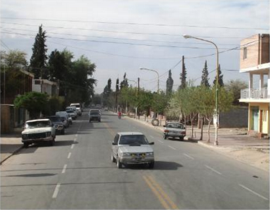
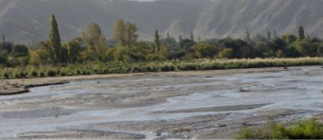
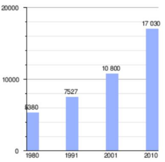
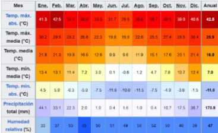

Santa Maria de los angeles de yokavil, continuamente llamada santa maria es la ciudad capital del departamento omonimo en el centro este de la provincia argentina de catamarca: sobre la margen derecha del rio santa maria; a 332km de la capital provincia san fernando del valle de catamarca tambien es considerada la capital de los valles calchaquies dependen del municipio las comunas de, chañar puncoy loro huasi, que tienen un delegado comunal electo a su frente.

El valle de Santa Maria o de yokavil fue asiento de milenarias culturas.diversas parcialidades habitaron la region con la mas alta densidad poblacional de su epoca.
fue aqui donde se desarrollo la cultura santa maria que influencio durante centurias vastos territorios de Catamarca, Salta y Tucuman. este valle tambien fue cupado por el imperio inca desde aproximadamente 1481 D.C. hasta la llegada de los españoles, probablemente, en 1536 cuando diego de almagro atraveso el valle en su paso a chile.
el valle de yokavil ofrece un panorama de paisajes sorprendentes, sinuosos y coloridos cerros, en donde los antepasados dejaron sus huellas plasmadas en monumentos y rocas

Cuenta con 17.030 habitantes (Indec, 2010), lo que representa un incremento del 58% frente a los 10,800 habitantes (Indec, 2001) del censo anterior.
Gráfica de evolución demográfica de Santa Maria entre 1980 y 2010

El clima de Santa María es árido de sierras y bolsones. Los veranos son más bien cálidos y con escasas precipitaciones (200 mm. anuales); los inviernos se presentan fríos y rigurosos con ocasionales nevadas. Las temperaturas minimas absolutas pueden bajar hasta los -12 °C (Período 1904-1950), y hasta -16 °C bajo cero en inviernos muy fríos.
Parámetros climáticos promedio de Santa Maria, Catamarca (1904-1950, extremes 1904-1950 and 1976-1986

Tomas Joseph Chaile